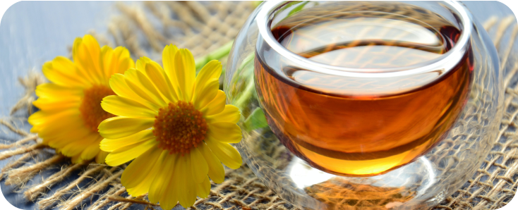

Hvordan te kan ændre dit liv, og hvordan man tilbereder den
Hvad er det første du tænker på, når du bliver den obligatoriske årlige forkølelse? Te med honning.
Te stammer fra det fjerne østen, hvor den oprindeligt blev opdaget af East India Company i det 17. århundrede. De bragte den med sig hjem, og snart blev hele Vesten fascineret af denne infunderede drik - og de har ret til at være det. Te har en lang historie med at blive brugt som et helbredende middel, og den store mængde af forskellige urter gør den nyttig til stort set alt. Her er en liste over de mest populære typer te, hvilken temperatur vand du skal bruge, og hvor længe du skal trække dem i:
- Sort, 100 C, 3-4 min
- Grøn, 80 C, 2-3 min
- Hvid, 70 C, 1-2 min
- Urtete, 100 C, 5-7 min
- Oolong, 80 C, 3-4 min
- Rooibos, 100 C, 4-5 min

Du tænker måske "Hvad betyder det noget? Jeg bruger altid bare kogende vand og holder teposen i!” - og smag er én ting, men her er problemet: Hvis du f.eks. trækker teen i vand, der er for varmt, vil det afmontere de komplekse næringsstoffer i teen, så du ikke får de fleste sundhedsmæssige fordele ud af det.
Afhængigt af teen kan den hjælpe med at bekæmpe helbredelige hverdagsproblemer som oppustethed, afgiftning, blodcirkulation, stress, angst, søvnløshed og meget mere. De tjener alle deres egne formål, og nogle gange står der også i teposepakker, hvad deres sundhedsmæssige fordele er. En ting du skal være opmærksom på, når du køber poser, er at smagen ikke kun er fra tilsatte aromaer. Den bedste slags te er dem uden smag, så kig efter poser med en længere ingrediensliste. Det er her løs te kommer ind i billedet, da den normalt er af højere kvalitet, og du har en direkte visualisering af, hvad der er i teen.
Begynd at drikke te, bevidst om de individuelle sundhedsmæssige fordele i dag, og se dit liv ændre sig til det bedre!
More from us:
Ny forskning siger, at diabetes kan helbredes!
Type II diabetes påvirker et voksende antal mennesker Read more...
Derfor skal du prøve matcha - og måder at bruge det på
Siden oldtiden er matcha blevet brugt af japanerne som en sund drik. Read more...
5 vaner, der vil ændre dit liv
Vi kender alle den følelse af at stå op om morgenen Read more...